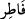

parçalamak ve açmak anlamlarına gelir. Yahut Râgıb’ın kaydettiği gibi “uzunlamasına
yarmak” demektir. Sanki Allah Teâlâ gökleri ve yeri yoktan çıkarmakla yokluğu yarmış
oluyor. “ ise oruç tutmamak demektir.
İbn Abbas (r.a.) der ki: “Ben, “ ifâdesinin ne anlama geldiğini tam olarak
bilmiyordum. Nihayet iki bedevî benim yanımda bir kuyu hakkında tartıştılar.
Bedevilerden biri “ yâni “o kuyuyu ilk olarak ben kazdım, yardım, açtım” dedi.
Ben bundan “ kelimesinin bir şeyi ilk defa yapıp yaratan, îcad eden mânâsında
olduğunu anladım.”
Müberrid der ki: “ demek ilk defa yaratıp îcâd eden demektir. Burada şöyle işârî
bir mânâ da vardır: Kudretin taalluk ettiği ilk şey ruhların semâvâtı ve nefislerin arzı,
yeridir. Yâni ruhlar ve nefislerdir. Melekler ise insan ruhlarının yaratılmasından sonra
yaratılmıştır. Burada meleklerin zikrinin sonraya bırakılması da buna delâlet etmektedir.
“Melekleri ikişer, üçer, dörder kanatlı elçiler yapan” âyetindeki yapan anlamındaki
“ kelimesi de yine ism-i celîlin başka bir sıfatıdır ve “ kelimesine izâfesi
de yine izâfet-i mahzadır. “Dönüştüren” demek olan “ anlamına gelir. Burada
meleklerden murad Cebrâil, İsrafil, Mîkâil, Azrâil (a.s.) ile “hafaza” denilen koruyucu,
yazıcı ve benzeri melekleridir.
Denilir ki: İsrafil (a.s.) Peygamberimiz (s.a.)’den başka hiçbir peygambere
inmemiştir. Yalnız Peygamberimiz (s.a.)’e inmiş; ona kıyâmete kadar olacak vak’aları
haber vermiş ve sonra yine semaya yükselmiştir. İnsânü’l-uyûn’da kaydedildiğine göre
İsrâfil (a.s.), Peygamberimiz (s.a.)’e peygamberlik gelmeden önce altı ay süreyle
inmiştir. Peygamberimiz (s.a.) onun sesini işitir; ancak kendisini göremezdi.
“, “resûl” kelimesinin çoğulu olup “mürsel” yâni “gönderilmiş elçi”
mânâsındadır. Âyetin mânâsı şudur: Allah Teâlâ melekleri, kendisiyle peygamberleri ve
sâlih kulları arasında vahiy, ilham ve sâdık rüyâlarla risâletini tebliğ etmek üzere vesîle
ve vâsıta yapmıştır. Bazı büyükler demiştir ki “ilkâ”, yâni gâibden gönüle atılan şey ya
sahih ya da fâsid olur. Sahih olan ya ilâhî-rabbânî – ki bu ilim ve marifetle ilgilidir- ya
da melekî-ruhânîdir. Bu da tâat ve dâimâ doğru şeyleri yapmaya vesîle olur ki buna
“ilham” denir. Fâsid olan ise ya nefsânî yâni nefsin haz duyduğu bir şeydir – ki buna
“hâcis” yâni ansızın akla gelen “vesvese” denilir- ya da şeytânîdir; yâni insanı mâsiyet
ve günaha dâvet eder. Buna da “vesvâs” yâni vesvese veren denir.
“İkişer, üçer, dörder kanatlı elçiler” ifâdesindeki “ kelimesi, “
kelimesinin sıfatıdır. “ kelimesi “ashab” yâni sâhib olanlar mânâsında “ ”
”
kelimesinin çoğuludur. Yine “ kelimesi de “” kelimesinin çoğuludur. “
kelimesi de “” kelimesinin çoğuludur. “
kelimesi harfi cer olan “” kelimesiyle karışmaması için nasb ve cer halinde “” ile
yazılmıştır. Ref’ halinde bu karışıklık olmasa da nasb ve cer hâli göz önünde tutularak
yine vâv ile yazılmıştır. Kanatlar mânâsına gelen “ kelimesi ise “ın çoğuludur